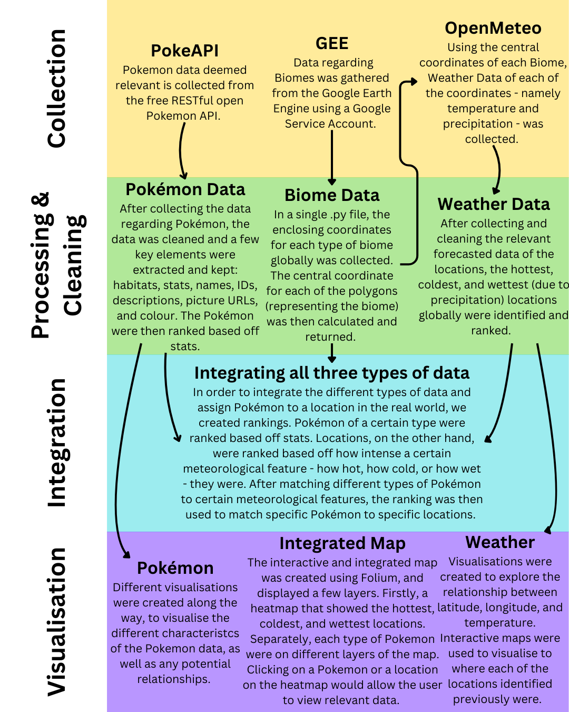

Explore the process of our project!
The process of our project generally follows the Data Science process taught in DS105. However, due to the nature of our project requiring the usage of multiple APIs, we have decided to include “Integration” as the third step of our project. As such, our process follows the structure as shown below:

The sections below will go into further detail about how each of the different types of data - Pokémon, Biome and Weather - are collected, cleaned, and analyzed for our project.
Tip: Click on the headers below to expand and explore our process in detail.
This section details the methodology for retrieving and processing Pokémon data from the PokeAPI. The approach ensures efficient data collection, structuring, and storage while utilizing parallel processing techniques to optimize performance.
This section focuses on collecting and analyzing biome data by determining the center coordinates of each ecoregion for the 14 biomes present in the Ecoregions 2017 Resolve dataset from Google Earth Engine (GEE). By identifying the central coordinates, we can use these coordinates to find out more data (e.g., weather data) using other APIs.
The map is scrollable and zoomable for detailed exploration. It also includes a search bar to easily locate specific Pokémon.
If you would like to learn more about how to use our map, please head over to our home page!